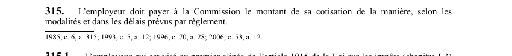

art-315-LATMP : paiement de la cotisation
Un article du wiki ⚖️ Recueil législatif
En bref
L'employeur doit payer à la CNESST le montant de sa cotisation de la manière, selon les modalités et dans les délais prévus par règlement. Cette obligation vise l'employeur.
- Paiement de la cotisation selon les modalités et délais réglementaires.
🌐 LegisQuébec · 📄 PDF officiel (page 78)
Texte officiel : capture du PDF
{kind=link}

Toucher l'image pour l'agrandir🔗 Ouvrir a cette page : LATMP.pdf : page 78 · texte a jour au 20 février 2024
Voir aussi
- art. 314.2 · champ d'application : la CNESST paie en un seul versement le montant dû à l'employeur au titre de l'ajustement rétrospectif de sa cotisation annuelle; à l'inverse, l'employeur paie le montant dû à ce même titre, auquel cas la section V (paiement de la cotisation) s'applique.
- art. 315.1 · l'employeur visé au premier alinéa de l'art.
- 🔢 Sous-article : art. 315.1 · l'employeur visé au premier alinéa de l'art.
- 🔢 Sous-article : art. 315.2 · définition : la Commission peut, aux fins du calcul du montant d'un versement prévu a article 315.1, imposer utilisation d'un taux provisoire fixé selon la méthode qu'elle estime appropriée.
- 🔢 Sous-article : art. 315.3 · lorsque employeur paie au ministre du Revenu un montant qui est inférieur & l'ensemble des montants qu'il déclare devoir lui payer a titre d'employeur en vertu d'une loi fiscale au sens de la Loi sur Vadministration fiscale (chapitre A-6.002) ou de article 315.1.
- 🔢 Sous-article : art. 315.4 · obligation : le ministre du Revenu remet au moins mensuellement a la Commission les montants qui lui ont éé payés en vertu de 'article 315.1, déduction faite des frais convenus et compte tenu des ajustements découlant d'ententes.
- 🔢 Sous-article : art. 315.5 · malgré l'art.
- 🔧 Modifié par : LMRSST art. 95 · modifie art.
- ↑ Loi : LATMP
Pages qui pointent ici (4)
- art-314.2-LATMP : paiement de l'ajustement rétrospectif Recueil législatif
- art-314.4-LATMP : déclaration d'une opération (art. 314.3) Recueil législatif
- art-315.1-LATMP : versements périodiques au ministre du Revenu Recueil législatif
- art-95-LMRSST : modifie l'art. 345 LATMP Recueil législatif